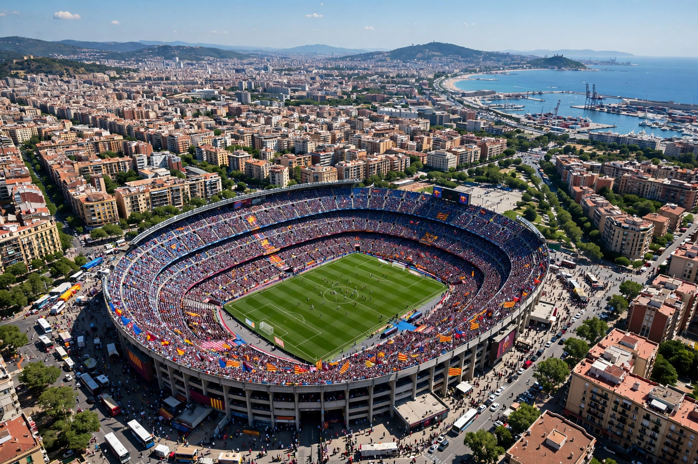

From Wikipedia, the free encyclopedia
| Camp Nou | |
|---|---|
 Aerial view of the vast open bowl of Camp Nou in Barcelona on a match day | |
| Location | Les Corts, Barcelona, Catalonia, Spain |
| Opened | 24 September 1957 |
| Owner | FC Barcelona |
| Capacity | 99,354 (before redevelopment); projected about 105,000 after |
| Former names | Estadi del FC Barcelona; officially Nou Estadi (nickname Camp Nou became official in 2001) |
Camp Nou (Catalan for "new field"), officially titled Spotify Camp Nou for sponsorship reasons, is a football stadium in Barcelona, Spain, and the home of FC Barcelona since 1957. On opening it replaced the old Les Corts ground and was the largest stadium in Europe; with a capacity of 99,354 it remained the largest football stadium on the continent and one of the biggest in the world. The stadium is famous for the mosaic displays (tifos) organised by supporters, for the club motto Més que un club spelled out in the seats, and as the stage for El Clásico against Real Madrid.
Camp Nou hosted the 1982 FIFA World Cup semi-final and opening ceremony, the 1992 Olympic football final, and two European Cup finals — most memorably Manchester United's stoppage-time comeback against Bayern Munich in 1999. In March 2022 the women's team set a world-record crowd for women's club football at the ground. A sweeping redevelopment, the Espai Barça project, began in 2023: the team temporarily relocated to the city's Olympic Stadium while the bowl is rebuilt with a complete roof and a capacity of around 105,000, restoring its status as Europe's largest stadium.
The stadium complex includes the club museum — long among the most visited museums in Catalonia — the chapel and players' tunnel bearing a picture of the Virgin of Montserrat, and the La Masia academy building nearby. Its great rival ground, Madrid's Santiago Bernabéu, has undergone its own renovation in the same period.
Categories: Camp Nou | FC Barcelona | Football venues in Barcelona